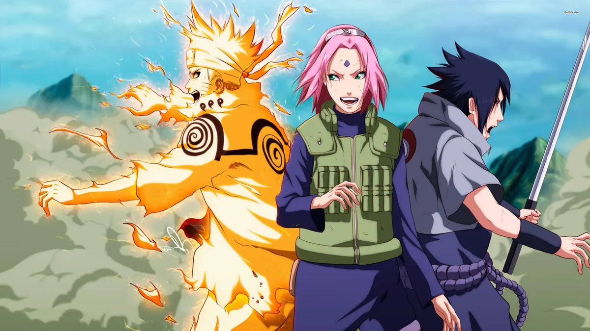

The first series is brought to a close by the end of Sasuke and Naruto's friendship. The young ninjas clash after the Academy tracks Sasuke down. Powered by the substances that the Sound Four have given him, Sasuke is much stronger than he was when he ran away from the Academy. The incredibly intense fight forces Naruto to call upon the beast trapped inside of him. Even so, he is overpowered by Sasuke. Though he does not wish to be foiled by any further attacks from Naruto, Sasuke ultimately spares his former friend's life. He feels that killing his unconcious friend would make him too much like his brother. In a symbolic gesture, he leaves the head protector he wore at the Academy by Naruto's body. In the background of all this, there are looming attacks from rogue leaders and the secret organization called Akatsuki. Knowing that the potential for global war is brewing, and that Naruto will have to get much stronger to face the coming threat, a renowned ninja named Jiraiya takes Naruto out of the academy for personal training. The timeline jumps forward several years between the end of Naruto and the beginning of Shippuden. The series begins with an older Naruto returning to the academy and we learn the progress of his friends. The trio at the center of the series are all training under legendary ninjas in individualized programs. Sakura has become an incredible healer, Naruto's abilities are much improved, and Sasuke is still on the run under the tutelage of the disgraced shinobi Orochimaru. The new series deals with the older ninjas fighting against the growing forces of the Akatsuki, who stage bolder and bolder attacks on various cities as cover to attempt to steal the sealed beast powers that a small class of fighters like Naruto possess. At the same time, the series offers a resolution to Sasuke's years-long quest to exact vengeance on his brother. Sasuke finds his brother and they engage in a long, drawn-out battle that features several feints and mind projections. Using their illusory ninjitsu abilities, the brothers go through several battles that end in gruesome and psychedelic ways, only for it to be revealed that the battle has yet to start outside of their minds.
